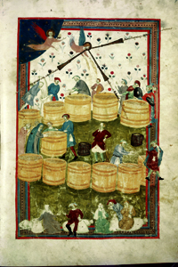
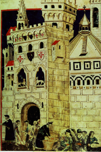
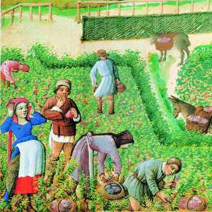

Lezione 9  Prima globalizzazione Europea
Prima globalizzazione Europea

-
125
275
-
185
305
-
225
290
-
235
315
-
185
205
EUROPA
1000: Intorno all’anno Mille l’Europa registra un incremento demografico e agricolo di notevoli dimensioni. E’ inevitabile una spinta espansionistica che ridefinisca l’assetto territoriale. Si ricercano nuovi sbocchi commerciali e nuove regioni che possano fornire materie prime. Nelle campagne nascono i poderi, che il proprietario concede in uso ai contadini con il contratto di mezzadria (prevede l’affitto del terreno in cambio di metà del raccolto).ITALIA E PAESI BASSI
Nell’Italia settentrionale e nei Paesi Bassi avviene la fuga dalle campagne e il fenomeno di inurbamento. Si trasferiscono in città molti signori, che diventano parte del ceto dirigente urbano, e molti contadini e servi della gleba. Questi ultimi, fuggendo dalle campagne, provocano un aumento del numero dei senza tetto, dei mendicanti, dei poveri e dei briganti. Dopo il 1000 cambia il giudizio morale e sociale del mercante, che sale nella considerazione pubblica. I grandi mercanti sono anche banchieri e controllavano il credito; si forma un capitale commerciale, nel grande commercio si introducono forme di associazioni di capitali: le “compagnie” mercantili, bancarie, manifatturiere.
TOSCANA
Uno dei segni più importanti della ripresa economica dopo l’anno 1000 è il nuovo impulso dell’attività mercantile. Nelle città tornano a fiorire i mercati, come si vede da questa miniatura trecentesca di Domenico Lenzi, che raffigura una scena consueta della vita cittadina: le acquirenti che esaminano la merce (in questo caso il grano) sotto l’occhio attento del mercante.
FIRENZE
Mendicanti, fornai, madri che fanno la spesa con i loro figli: un realistico ritratto della Firenze medievale in una miniatura di Domenico Lenzi detto il biadaiolo.
FRANCIA
I lavori agricoli conoscono un’intensa ripresa nel Basso Medioevo: in questa miniatura dei fratelli Limbourg, dipinta nel XV secolo, vediamo un’immagine dai toni quasi favolistici di contadini al lavoro nei campi.